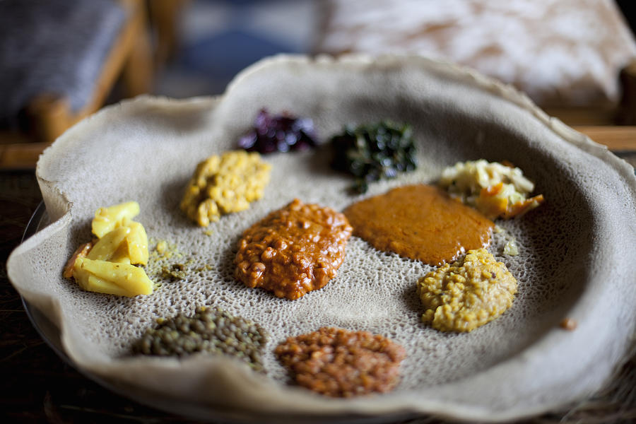

Injera

Injera is a traditional Ethiopian sourdough flatbread made from teff flour. It is spongy and used to scoop up stews and vegetables.
Cooking Instructions
- Mix teff flour with water and ferment for 2-3 days.
- Stir and pour onto a hot skillet.
- Cook without flipping until bubbles form and it's set.
Ingredients
- Teff flour
- Water
- Time (for fermentation)
Tutorial Video
Origin Map